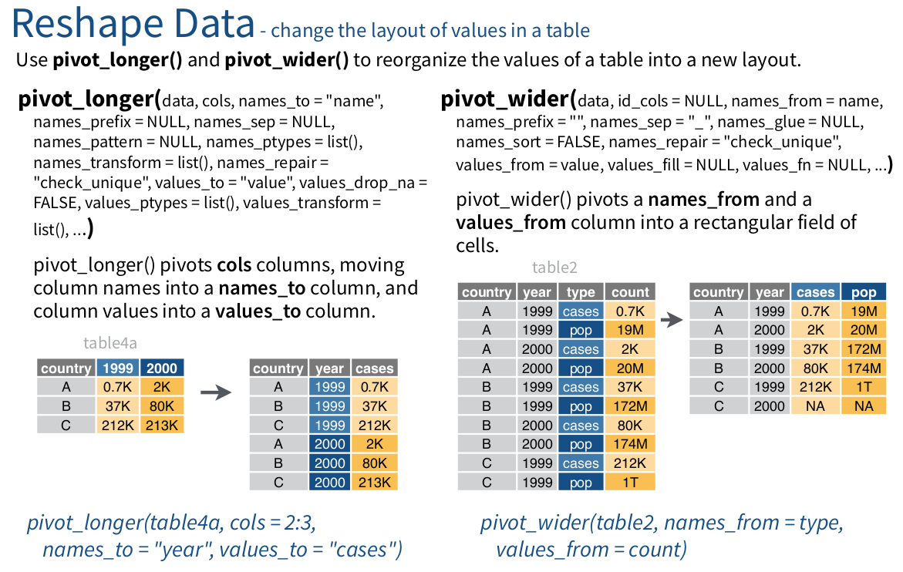

Tidy data
Table of Contents
Tidy data
Introduction: What is tidy data?
“Happy families are all alike; every unhappy family is unhappy in its own way.” -Tolstoy
This influential paper by Hadley Wickham introduces the notion of tidy data. In this section, we will learn the basic principles of tidy data, why it is important, and what tools you need to get your data into tidy format.
Tidy datasets conform to a standarized way of linking data structure to data semantics (meaning) based on the following three principles:
- Each variable forms a column
- Each observation forms a row
- Each type of observational unit forms a table
These principles are best illustrated by example.
Consider the dataset below, corresponding to an imaginary two-alternative forced choice lexical decision study, where you present four word stimuli in a row to each participant, with each stimulus being in one of two conditions (Cond: control, C or experimental, E) and you record response time (RT in milliseconds) and the participant’s choice (Choice: A or B). Here is an untidy representation of the data.
Figure 1: Untidy representation.
If you think about the variables in the study— Cond, RT, Choice, SubjectID — this representation is clearly untidy. The person who entered the data did it in such a way that they squeezed all of the observations for a single subject into one row.
Tidyness can be a matter of degree. Here is a more tidy version of the dataset. This is better, but can you see the way that it is untidy?
Figure 2: Tidy-ish representation.
This table violates the third principle; multiple observation units are represented in a single table.
The observation units in this study can be broken down to Subject and Trial (and even Item, if we have information about each stimulus, such as whether it is high or low frequency). Breaking these apart into separate tables eliminates redundancy.
Figure 3: Tidy representation.
Tidy tools: Why you should care about tidy data
The tidy format is a clean, predictable data structure. We don’t just make our data tidy because it looks nice, but because having tidy data allows us to work with tidy tools. A tidy tool is a function to transform data that takes tidy data as input and returns tidy data as output. All of the functions in the tidyverse packages have been designed as tidy tools, and thus are interoperable. In contrast, many of the older functions in base R do not yield tidy output, which impaires interoperability.
Example: Deriving a tidy table of babynames with distinct()
Let’s imagine you are a linguist interested in whether trends in babynames have a phonological basis; for example, do girls names ending with a vowel become popular at certain times in history? You would need to derive information about the sound properties of each name in the babynames dataset. A good place to start would be to derive a table containing all of the unique names in the dataset; once you’ve created the table then you could fill in the table with additional information, and later recombine it with the popularity data. The distinct() function is the function you need to do this.
name_table <- babynames %>% distinct(name) %>% arrange(name) name_table
# A tibble: 97,310 x 1 name <chr> 1 Aaban 2 Aabha 3 Aabid 4 Aabir 5 Aabriella 6 Aada 7 Aadam 8 Aadan 9 Aadarsh 10 Aaden # … with 97,300 more rows
Now name_table is a table of the nrow(name_table) [1] 97310 distinct names in the dataset. Let’s determine whether the name ends with a vowel using the substr() function, which extracts a substring from a character value.
name_table %>% mutate(end_char = substr(name, nchar(name), nchar(name)), is_vowel = end_char %in% c("a", "e", "i", "o", "u"))
# A tibble: 97,310 x 3 name end_char is_vowel <chr> <chr> <lgl> 1 Aaban n FALSE 2 Aabha a TRUE 3 Aabid d FALSE 4 Aabir r FALSE 5 Aabriella a TRUE 6 Aada a TRUE 7 Aadam m FALSE 8 Aadan n FALSE 9 Aadarsh h FALSE 10 Aaden n FALSE # … with 97,300 more rows
You could add further linguistic information into this table (e.g., number of syllables, etc.). Later on we will learn how you could re-combine this back with the original table using an inner_join().
Exercise (optional) with distinct()
Create a table containing the distinct names for each sex in the table. (Note that you can use more than one argument to distinct().) Then pull out those names that are not androgynous, i.e., that only appear for boys and never for girls, or vice versa.
you can use a windowed operation with group_by()
distinct(babynames, name, sex) %>% group_by(name) %>% filter(n() == 1) ## alternative solution: ## distinct(babynames, name, sex) %>% ## count(name) %>% ## filter(n == 1)
# A tibble: 86,647 x 2 # Groups: name [86,647] sex name <chr> <chr> 1 F Lulu 2 F Belle 3 F Mayme 4 F Mathilda 5 F Hettie 6 F Fanny 7 F Adelaide 8 F Lelia 9 F Nelle 10 F Minerva # … with 86,637 more rows
The tidyr package: going from wide to long and back again
The RStudio Data Import cheatsheet may be useful for this part of the session. Here is the key part of that cheatsheet that explains what we’ll be learning.

The examples in the figure above are available to your session through the tidyr package. Try them out in the console so that you get an understanding of how they work.
The dataset we will be working with in the file personality.csv. The dataset is from a 5-factor (OCEAN) personality questionnaire (thanks to Lisa DeBruine). Each question is labelled with the domain (Op = openness, Co = concientiousness, Ex = extraversion, Ag = agreeableness, and Ne = neuroticism) and the question number.
Exercises
- Load and look!
Load in the data from the csv file into the variable
big5and look at it (useglimpse()andView()).big5 <- read_csv("personality.csv") glimpse(big5)
── Column specification ──────────────────────────────────────────────────────── cols( .default = col_double(), date = col_date(format = "") ) ℹ Use `spec()` for the full column specifications. Rows: 15,000 Columns: 43 $ user_id <dbl> 0, 1, 2, 5, 8, 108, 233, 298, 426, 436, 685, 807, 871, 881, 94… $ date <date> 2006-03-23, 2006-02-08, 2005-10-24, 2005-12-07, 2006-07-27, 2… $ Op1 <dbl> 3, 6, 6, 6, 6, 3, 3, 6, 6, 3, 4, 5, 5, 5, 6, 4, 1, 2, 5, 6, 4,… $ Ne1 <dbl> 4, 0, 0, 4, 1, 2, 3, 4, 0, 3, 3, 3, 2, 1, 1, 3, 4, 5, 2, 4, 5,… $ Ne2 <dbl> 0, 6, 6, 4, 2, 1, 2, 3, 1, 2, 5, 5, 3, 1, 1, 1, 1, 6, 1, 2, 5,… $ Op2 <dbl> 6, 0, 0, 4, 6, 4, 4, 0, 0, 3, 4, 3, 3, 4, 5, 3, 3, 4, 1, 6, 6,… $ Ex1 <dbl> 3, 0, 0, 2, 2, 4, 4, 3, 5, 4, 1, 1, 3, 3, 1, 3, 5, 1, 0, 4, 1,… $ Ex2 <dbl> 3, 0, 0, 3, 3, 4, 5, 2, 5, 3, 4, 1, 3, 2, 1, 6, 5, 3, 4, 4, 1,… $ Co1 <dbl> 3, 0, 0, 3, 5, 4, 3, 4, 5, 3, 3, 3, 1, 5, 5, 4, 4, 5, 6, 4, 2,… $ Co2 <dbl> 3, 0, 0, 3, 4, 3, 3, 4, 5, 3, 5, 3, 3, 4, 5, 1, 5, 4, 5, 2, 5,… $ Ne3 <dbl> 0, 0, 0, 1, 0, 1, 4, 4, 0, 4, 2, 5, 1, 2, 5, 5, 2, 2, 1, 2, 5,… $ Ag1 <dbl> 2, 0, 0, 4, 6, 5, 5, 4, 2, 5, 4, 3, 2, 4, 5, 3, 5, 5, 5, 4, 4,… $ Ag2 <dbl> 1, 6, 6, 0, 5, 4, 5, 3, 4, 3, 5, 1, 5, 4, 2, 6, 5, 5, 5, 5, 2,… $ Ne4 <dbl> 3, 6, 6, 2, 3, 2, 3, 3, 0, 4, 4, 5, 5, 4, 5, 3, 2, 5, 2, 4, 5,… $ Ex3 <dbl> 3, 6, 5, 5, 3, 3, 3, 0, 6, 1, 4, 2, 3, 2, 1, 2, 5, 1, 0, 5, 5,… $ Co3 <dbl> 2, 0, 1, 3, 4, 4, 5, 4, 5, 3, 4, 3, 4, 4, 5, 4, 2, 4, 5, 2, 2,… $ Op3 <dbl> 2, 6, 5, 5, 5, 4, 3, 2, 4, 3, 3, 6, 5, 5, 6, 5, 4, 4, 3, 6, 5,… $ Ex4 <dbl> 1, 0, 1, 3, 3, 3, 4, 3, 5, 3, 2, 0, 3, 3, 1, 2, NA, 4, 4, 4, 1… $ Op4 <dbl> 3, 0, 1, 6, 6, 3, 3, 0, 6, 3, 4, 5, 4, 5, 6, 6, 2, 2, 4, 5, 5,… $ Ex5 <dbl> 3, 0, 1, 6, 3, 3, 4, 2, 5, 2, 2, 4, 2, 3, 0, 4, 5, 2, 3, 1, 1,… $ Ag3 <dbl> 1, 0, 1, 1, 0, 4, 4, 4, 3, 3, 4, 4, 3, 4, 4, 5, 5, 4, 5, 3, 4,… $ Co4 <dbl> 3, 6, 5, 5, 5, 3, 2, 4, 3, 1, 4, 3, 1, 2, 4, 2, NA, 5, 6, 1, 1… $ Co5 <dbl> 0, 6, 5, 5, 5, 3, 3, 1, 5, 1, 2, 4, 4, 4, 2, 1, 6, 4, 3, 1, 3,… $ Ne5 <dbl> 3, 0, 1, 4, 1, 1, 4, 5, 0, 3, 4, 6, 2, 0, 1, 1, 0, 4, 3, 1, 5,… $ Op5 <dbl> 6, 6, 5, 2, 5, 4, 3, 2, 6, 6, 2, 4, 3, 4, 6, 6, 6, 5, 3, 3, 5,… $ Ag4 <dbl> 1, 0, 1, 4, 6, 5, 5, 6, 6, 6, 4, 2, 4, 5, 4, 5, 6, 4, 5, 6, 5,… $ Op6 <dbl> 0, 6, 5, 1, 6, 4, 6, 0, 0, 3, 5, 3, 5, 5, 5, 2, 5, 1, 1, 6, 2,… $ Co6 <dbl> 6, 0, 1, 4, 6, 5, 6, 5, 4, 3, 5, 5, 4, 6, 6, 1, 3, 4, 5, 4, 6,… $ Ex6 <dbl> 3, 6, 5, 3, 0, 4, 3, 1, 6, 3, 2, 1, 4, 2, 1, 5, 6, 2, 1, 2, 1,… $ Ne6 <dbl> 1, 6, 5, 1, 0, 1, 3, 4, 0, 4, 4, 5, 2, 1, 5, 6, 1, 2, 2, 3, 5,… $ Co7 <dbl> 3, 6, 5, 1, 3, 4, NA, 2, 3, 3, 2, 2, 4, 2, 5, 2, 5, 5, 3, 1, 1… $ Ag5 <dbl> 3, 6, 5, 0, 2, 5, 6, 2, 2, 3, 4, 1, 3, 5, 2, 6, 5, 6, 5, 3, 3,… $ Co8 <dbl> 3, 0, 1, 1, 3, 4, 3, 0, 1, 3, 2, 2, 1, 2, 4, 3, 2, 4, 5, 2, 6,… $ Ex7 <dbl> 3, 6, 5, 4, 1, 2, 5, 3, 6, 3, 4, 3, 5, 1, 1, 6, 6, 3, 1, 1, 3,… $ Ne7 <dbl> NA, 0, 1, 2, 0, 2, 4, 4, 0, 3, 2, 5, 1, 2, 5, 2, 2, 4, 1, 3, 5… $ Co9 <dbl> 3, 6, 5, 4, 3, 4, 5, 3, 5, 3, 4, 3, 4, 4, 2, 4, 6, 5, 5, 2, 2,… $ Op7 <dbl> 0, 6, 5, 5, 5, 4, 6, 2, 1, 3, 2, 4, 5, 5, 6, 3, 6, 5, 2, 6, 5,… $ Ne8 <dbl> 2, 0, 1, 1, 1, 1, 5, 4, 0, 4, 4, 5, 1, 2, 5, 2, 1, 5, 1, 2, 5,… $ Ag6 <dbl> NA, 6, 5, 2, 3, 4, 5, 6, 1, 3, 4, 2, 3, 5, 1, 6, 2, 6, 6, 5, 3… $ Ag7 <dbl> 3, 0, 1, 1, 1, 3, 3, 5, 0, 3, 2, 1, 2, 3, 5, 6, 4, 4, 6, 6, 2,… $ Co10 <dbl> 1, 6, 5, 5, 3, 5, 1, 2, 5, 2, 4, 3, 4, 4, 3, 2, 5, 5, 5, 2, 2,… $ Ex8 <dbl> 2, 0, 1, 4, 3, 4, 2, 4, 6, 2, 4, 0, 4, 4, 1, 3, 5, 4, 3, 1, 1,… $ Ex9 <dbl> 4, 6, 5, 5, 5, 2, 3, 3, 6, 3, 3, 4, 4, 3, 2, 5, 5, 4, 4, 0, 4,…
- Reshape from wide to long
The dataset is in wide format. Use the appropriate tidyr function to reshape it to long, with variables named
item(which item,Op1,Ne1, etc) andscore(3, 4, 0, 6, etc). Store the long data in the variablebig5_longbig5_long <- pivot_longer(big5, Op1:Ex9, names_to = "item", values_to = "score") big5_long
# A tibble: 615,000 x 4 user_id date item score <dbl> <date> <chr> <dbl> 1 0 2006-03-23 Op1 3 2 0 2006-03-23 Ne1 4 3 0 2006-03-23 Ne2 0 4 0 2006-03-23 Op2 6 5 0 2006-03-23 Ex1 3 6 0 2006-03-23 Ex2 3 7 0 2006-03-23 Co1 3 8 0 2006-03-23 Co2 3 9 0 2006-03-23 Ne3 0 10 0 2006-03-23 Ag1 2 # … with 614,990 more rows - Split the
itemvariable into two variables
Try to use the
separate()function to make your table look like this:# A tibble: 615,000 x 5 user_id date trait question score <dbl> <date> <chr> <int> <dbl> 1 0 2006-03-23 Op 1 3 2 0 2006-03-23 Ne 1 4 3 0 2006-03-23 Ne 2 0 4 0 2006-03-23 Op 2 6 5 0 2006-03-23 Ex 1 3 6 0 2006-03-23 Ex 2 3 7 0 2006-03-23 Co 1 3 8 0 2006-03-23 Co 2 3 9 0 2006-03-23 Ne 3 0 10 0 2006-03-23 Ag 1 2 # … with 614,990 more rowsSee
?separateto find out what argument you need to use to be able to separate based on position (rather than character). Store the result inbig5_long2.big5_long2 <- big5_long %>% separate(item, c("trait", "question"), sep = 2, convert = TRUE)
- Calculate scores for each
trait/user_idcombination
Now calculate trait scores for each
user_idandtraitby summing the scores. Store the result inbig5_scores.big5_long2 %>% group_by(user_id, trait) %>% summarise(tot = sum(score, na.rm = FALSE), .groups = "drop")
# A tibble: 75,000 x 3 user_id trait tot <dbl> <chr> <dbl> 1 0 Ag NA 2 0 Co 27 3 0 Ex 25 4 0 Ne NA 5 0 Op 20 6 1 Ag 18 7 1 Co 30 8 1 Ex 24 9 1 Ne 18 10 1 Op 30 # … with 74,990 more rows - EXTRA: string all the above commands in a single pipeline
big5 <- read_csv("personality.csv") %>% pivot_longer(Op1:Ex9, names_to = "item", values_to = "score") %>% separate(item, c("trait", "question"), sep = 2, convert = TRUE) %>% group_by(user_id, trait) %>% summarise(tot = sum(score, na.rm = FALSE), .groups = "drop") big5
── Column specification ──────────────────────────────────────────────────────── cols( .default = col_double(), date = col_date(format = "") ) ℹ Use `spec()` for the full column specifications. # A tibble: 75,000 x 3 user_id trait tot <dbl> <chr> <dbl> 1 0 Ag NA 2 0 Co 27 3 0 Ex 25 4 0 Ne NA 5 0 Op 20 6 1 Ag 18 7 1 Co 30 8 1 Ex 24 9 1 Ne 18 10 1 Op 30 # … with 74,990 more rows
Combining information across tables: dplyr two-table verbs
If you follow the principles of tidy data, you will end up with information scattered across different tables, since you’ll have independent tables for each unit of observation. Often you will need to combine information from multiple tables. How do you put it back together? You do this using the various join functions from the dplyr package.
There are two main types of join functions: mutating joins and filtering joins, called thus because their functions are analogous to what mutate() and filter() do for single tables.
Mutating joins connect the information in two tables through linking variables or keys that identify which rows go together.
Filtering joins allow you to decide which rows to keep or remove in one table based on the rows available in another table. In the interest of time, we won’t be covering filtering joins (semi_join() and anti_join()).
Mutating joins
The two main mutating joins you should know about are inner_join() and left_join().
inner_join()
A common situation where you might want to use an inner join is when you want to look up values in a lookup table. For instance, consider the situation where you have numerical scores for an exam and want to convert them to alphanumeric grades. My university, the University of Glasgow, uses a 22 point scale that looks like this:
| score | mark |
|---|---|
| 22 | A1 |
| 21 | A2 |
| 20 | A3 |
| 19 | A4 |
| 18 | A5 |
| 17 | B1 |
| 16 | B2 |
| 15 | B3 |
| 14 | C1 |
| 13 | C2 |
| 12 | C3 |
| 11 | D1 |
| 10 | D2 |
| 9 | D3 |
| 8 | E1 |
| 7 | E2 |
| 6 | E3 |
| 5 | F1 |
| 4 | F2 |
| 3 | F3 |
| 2 | G1 |
| 1 | G2 |
| 0 | H |
Let’s say this is stored in the variable mscale. You also have a table of scores called exam like the one below, and you want to assign each 0-22 score the mark that appears in mscale.
# A tibble: 10 x 2 student_id score <chr> <int> 1 1276172 18 2 2973679 14 3 6655424 0 4 5770670 22 5 4547353 4 6 4286501 10 7 4053604 20 8 8675541 12 9 3653681 20 10 8984571 23
So student sids[1] [1] "1276172" who got an 18 should be given an A5, the student who got a 14 should get a C1, etc. You could do this by hand, but it would be tedious and error-prone. What you could do instead would be to join the two tables on the key field of score, like so:
result <- inner_join(exam, mscale, "score") result
# A tibble: 9 x 3 student_id score mark <chr> <int> <chr> 1 1276172 18 A5 2 2973679 14 C1 3 6655424 0 H 4 5770670 22 A1 5 4547353 4 F2 6 4286501 10 D2 7 4053604 20 A3 8 8675541 12 C3 9 3653681 20 A3
left_join()
Note that the one student who had an 23 for their score (error? extra credit?) got thrown out from the result table. A left_join(x, y) keeps all of the data in table x even if it lacks a match in table y, and the missing variable values get filled in with NAs. Compare this result to the one above.
left_join(exam, mscale, "score")
# A tibble: 10 x 3 student_id score mark <chr> <int> <chr> 1 1276172 18 A5 2 2973679 14 C1 3 6655424 0 H 4 5770670 22 A1 5 4547353 4 F2 6 4286501 10 D2 7 4053604 20 A3 8 8675541 12 C3 9 3653681 20 A3 10 8984571 23 <NA>